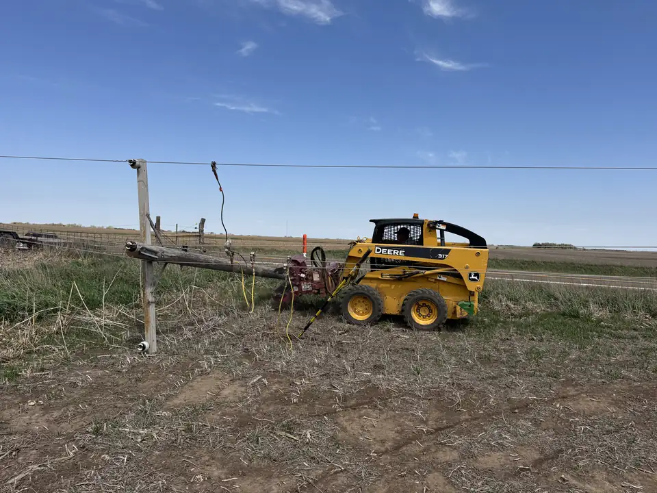
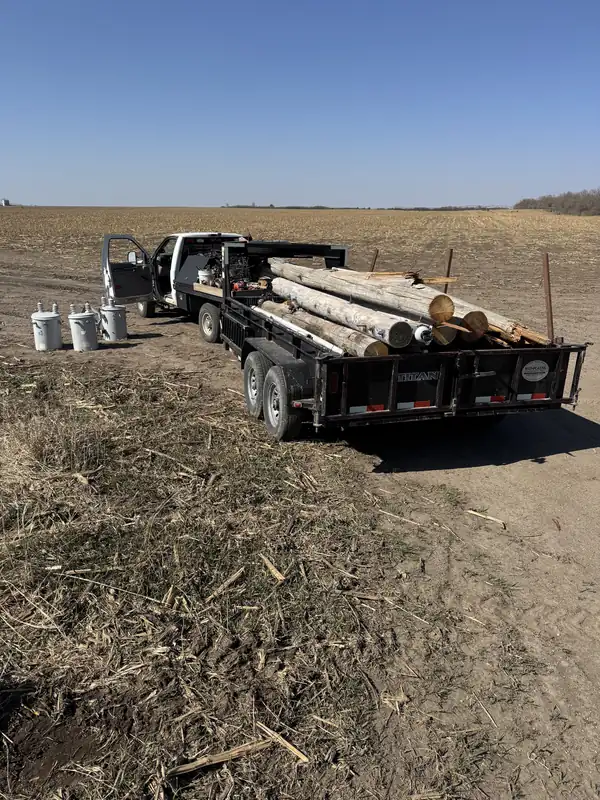
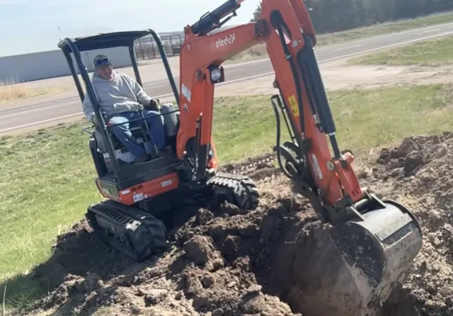
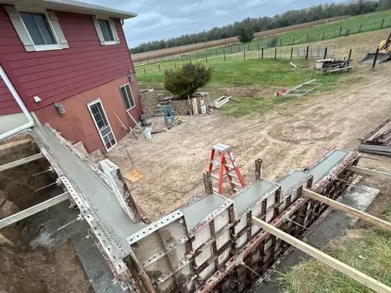
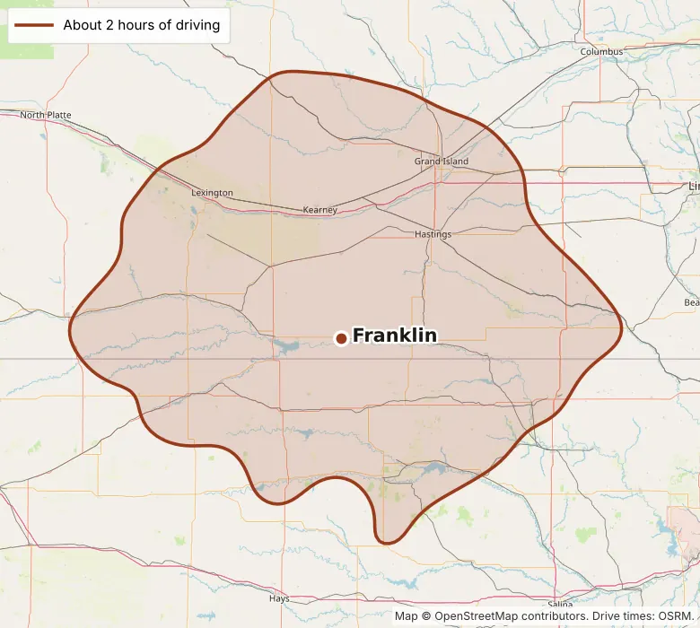

Government · FEMA contract
FEMA contract storm cleanup for a power company
Storm cleanup completed under a FEMA contract for a power company, including pulling broken power poles and hauling them out.
Veteran owned · Franklin, Nebraska · Est. 2016
BG Welsh LLC is a veteran-owned excavation and concrete contractor in Franklin, Nebraska, taking on federal, state, county and city work across south-central Nebraska and northern Kansas. Insured for FEMA work, with completed FEMA storm recovery work.

For contracting officers
Everything you need to qualify BG Welsh, on one printable page.
View capability statementStorm and FEMA recovery
Downed poles, washed-out crossings, blocked culverts and debris on public ground need a crew with the right equipment and the right coverage. BG Welsh brings both.


Clearing, loading and hauling debris from roads, yards and public sites.
Opening, replacing and resetting culverts, and reshaping ditches so water moves again.
Filling washouts, regrading and putting gravel back on damaged roads and sites.
Digging to broken lines and repairing them around other buried utilities.
Services
One crew from dirt to concrete, for public agencies, farms, ranches and businesses.
Digging, grading, backfill and cleanup with backhoe and skid steer.
Lines to houses, shops, hydrants and pastures, dug and backfilled.
Pads, aprons, alleys and runways poured for cattle and heavy equipment.
Formed and poured walls that hold the grade around buildings and yards.
Cattle waterers set on concrete and plumbed; stock tanks set level and sealed.
Hauling and spreading gravel, and regrading drives and roads.
Where BG Welsh started. New systems and repairs.
Site work on larger projects, including an FSA office.
Past performance
References and project details are available on request.
Government · FEMA contract
Storm cleanup completed under a FEMA contract for a power company, including pulling broken power poles and hauling them out.

Government · Public building
Excavation and site work helping build an FSA office.
Recent private jobs


The old block wall had come apart. It was replaced with formed and poured concrete walls.

The main broke under a patio, with gas, electric and sewer lines at different depths. The dig reached the break without hitting any of them.

Placing concrete into the forms straight from the bucket.

Trenched across the yard with the new line ready to lay.

Splicing control wires in a valve box.
About
BG Welsh started as a small lawn sprinkler business and grew into a backhoe, trenching and concrete outfit. Brian and Gina Welsh run it from Franklin, Nebraska.
The family also runs a cattle herd, so water and feedlot concrete are work they know from both sides of the fence.
Service area
South-central Nebraska and northern Kansas, including Kearney, Grand Island, Hastings and Lexington. Mileage is figured into the quote. Not sure you're in range? Call Gina.
Drive times estimated from road routing. Map data © OpenStreetMap contributors.

FAQ
Yes. BG Welsh has done government work, including site work on an FSA office, and has completed FEMA storm recovery work. Federal, state, county and city projects are welcome.
Yes. BG Welsh is insured for FEMA work. Certificates of insurance are available on request.
Yes. BG Welsh completed storm cleanup under a FEMA contract for a power company.
238910 site preparation, 238110 poured concrete, 237110 water and sewer lines, 561730 landscaping, 237310 highway, street and bridge construction, 237990 other heavy and civil engineering, and 236220 commercial and institutional building construction.
Yes. BG Welsh LLC is veteran owned and family owned, run by Brian and Gina Welsh in Franklin, Nebraska.
South-central Nebraska and northern Kansas, within about two hours of driving from Franklin, Nebraska. Mileage is figured into the quote.
Call or text Gina at (308) 470-1254. The capability statement is on this site and can be printed or saved as a PDF.
Call or text
Gina answers the phone and sets up a time to look at the job.